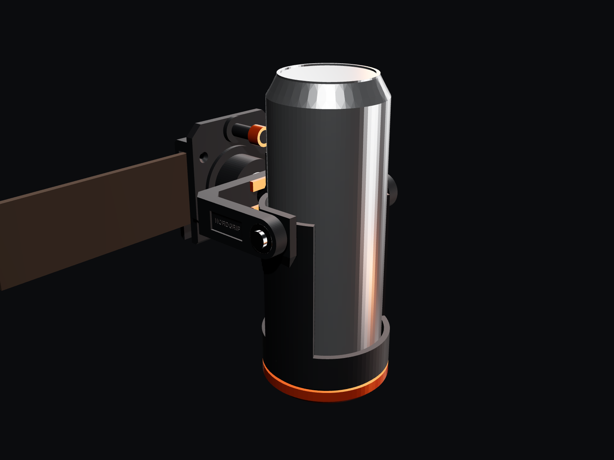
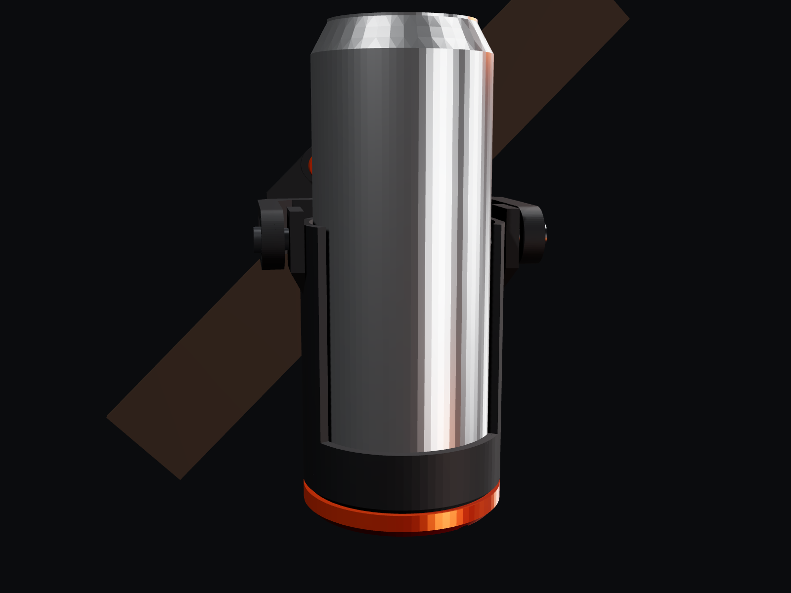
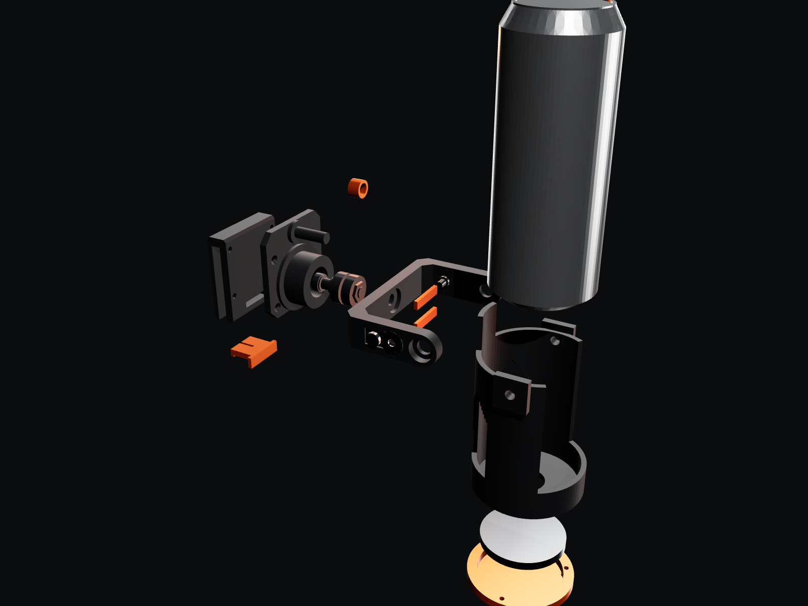
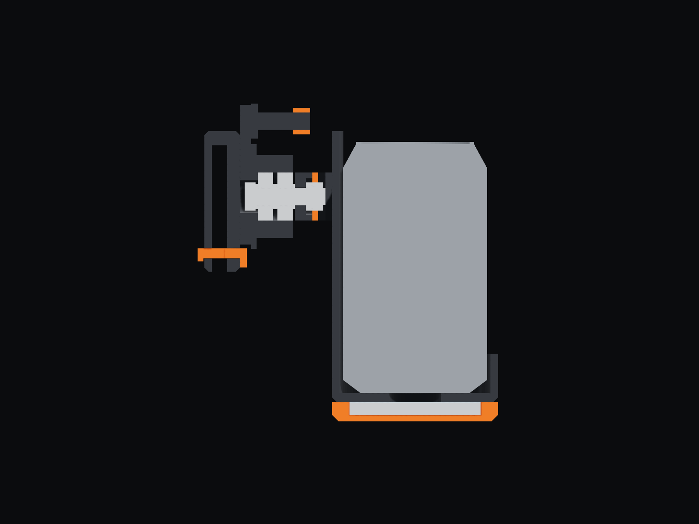

Ett ölhölster för bältet som håller burken lodrät när du böjer dig. Ingen elektronik. Burkhållaren hänger i två korsande kullagrade axlar med tyngdpunkten under axlarna, så gravitationen gör jobbet.


Hela oket hänger på en M8-axel i två 608-lager i navplattan. Axeln pekar rakt ut från höften. När du böjer dig framåt vrider sig plattan runt axeln, och oket med burken pendlar parallellt med kroppen. Därför finns inget i vägen: rörelsen tål ±60° innan okets balk går mot stoppklacken.
Burkhållaren hänger i okets två armar på M5-tappar i 625-lager. Den axeln ligger längs bältet. Här begränsar kroppen: burkens botten svänger in mot låret när du lutar dig bort från hölstret. Stoppen sitter på ±20°, och burken står 75 mm ut från plattan för att få det utrymmet.
Eftersom pitchaxeln sitter ytterst förblir rollaxeln vågrät oavsett hur mycket du böjer dig framåt. Axlarna stör alltså inte varandra, och de korsas i en punkt 90 mm över burkens botten.

| Del | Material | Utskrift, stödfri orientering | Mått på plattan (mm) |
|---|---|---|---|
| Bältesklämma | PETG svart | På sidan, U-profilen extruderas uppåt | 65 × 17 × 56 |
| Navplatta (yttre ram) | PETG svart | Baksidan ned, lagersätet vertikalt | 67 × 64 × 32 |
| Ok (gimbalram) | PETG svart | Plant, som monterat | 66 × 104 × 22 |
| Burkhållare | PETG svart | Stående på botten | 76 × 84 × 124 |
| Bottenlock med ballastficka | PETG orange | Fickan uppåt | 76 × 76 × 9 |
| Låsregel | PETG orange | Stående på huvudet | 9 × 32 × 23 |
| Buffertar och stopphylsa | TPU 95A orange | Plant | små |
FIT
Hållaren är stabil så länge den pendlande massans tyngdpunkt ligger under axlarna. Siffrorna är beräknade ur CAD-modellens volymer med 75 % effektiv fyllnad i PETG-delarna.
| Last | Pendlande massa | Tyngdpunkt under axel | Egenfrekvens |
|---|---|---|---|
| 50 cl, full | 733 g | 32 mm | 1,4 Hz |
| 50 cl, full, utan ballast | 600 g | 17 mm | 1,2 Hz |
| 50 cl, halvfull | 483 g | 64 mm | 1,6 Hz |
| 33 cl, full | 563 g | 53 mm | 1,7 Hz |
| Tom hållare | 218 g | 84 mm | 1,6 Hz |
En full 50 cl-burk har sin tyngdpunkt bara 10 mm under axlarna. Utan ballast blir marginalen 17 mm och hållaren rätar upp sig trögt. Stålrondellen i bottenlocket fördubblar nästan marginalen.
Egenfrekvensen 1,2–1,7 Hz ligger nära gångens takt, ungefär 0,9 Hz i sidled och 1,8 Hz i stegled. Utan dämpning kan burken börja gunga i takt med stegen. Grundlösning: byt lagerfettet mot trögflytande dämpfett. Det bromsar rörelsen men ger inget vilofel. Nästa steg är en virvelströmsbroms med två neodymmagneter mot en aluminiumplåt på navet.
Burkhållaren är öppen 120° framåt, från bottenringen och hela vägen upp. Du greppar burken runt sidorna som ett glas och lyfter rakt upp. Öppningens bredd är 60 mm, alltså smalare än burkens 66 mm, så burken kan inte glida ut åt sidan. Spelet på 1,5 mm runt om gör att den inte kläms fast. Två fönster bakåt ventilerar och släpper ut kondens, och golvet har ett dräneringshål på 24 mm.
De fotorealistiska versionerna av vy 1–3 är genererade med CAD-bilderna som förlaga och ligger i ditt Higgsfield-bibliotek. Den här sessionen fick inte hämta hem bildfilerna, så sidan visar CAD-renderingarna.